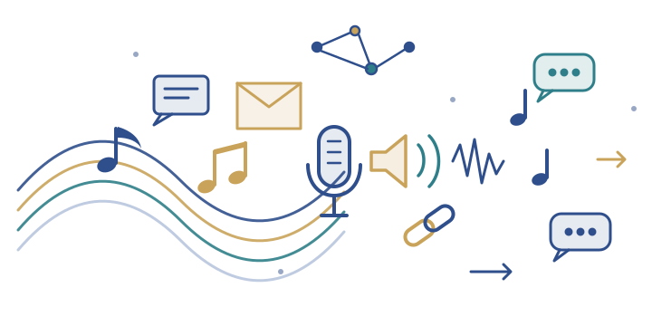

At Kitaak, we believe the workplace can be productive, connected, and enjoyable at the same time.
Connect. Communicate. Enjoy the Music.
Welcome to a new way of experiencing communication in the workplace.

Kitaak is a communication and music application designed to bring music into the workday while keeping important conversations at the center of attention. Our platform combines workplace communication with an intelligent music experience that adapts when people need to talk.
When a call or voice communication begins, Kitaak is designed to automatically lower the music so conversations can be heard clearly. When the conversation ends, the music can smoothly return to its preset level — creating a more natural and uninterrupted experience without constantly adjusting volume controls.
Music can help create an enjoyable atmosphere, but communication should never be interrupted by it.
Playing the right music while working can lead to increased productivity, and utilizing appropriate music at the right time and the right place can add to work satisfaction.
That is why Kitaak is built around the idea of communication priority. Whether employees are chatting, receiving a voice message, or participating in a conversation, the application's audio experience is designed to adapt to the moment.
Our goal is simple:
Enjoy the music when you can. Hear the conversation when you need to.
Kitaak is designed for organizations, teams, workplaces, and communities looking for a different way to combine communication and music.
Through Kitaak, users can stay connected with colleagues while enjoying a shared audio environment designed to fit naturally into the rhythm of the workday.
People have different music listening habits: some listen for many hours during the day and some listen to a track or two on occasion. Either habit has different gains for the listener and can make the workplace more enjoyable and improve productivity.
Kitaak is a full communication suite — direct messages, group chats with an order of speaking, voice and video calls, voice messages, files and contacts with clear communication signs — paired with a curated music library. Groups can run instant speech sessions in which selected speakers talk live in front of everyone. Families and companies get their own plans and pages, and administrators keep control of hours and the workplace music selection. Using the settings for Live Instant Communication, you can grant instant access during work hours to the individuals that have priority for live instant voice-over to reach you.
We envision a future where workplace technology does more than simply deliver messages and notifications. Technology should help create a better atmosphere, encourage connection, and adapt intelligently to the people using it.
Kitaak is working toward making music and communication feel less like two separate experiences — and more like one seamless part of everyday life.
Explore the application or get in touch with the team.